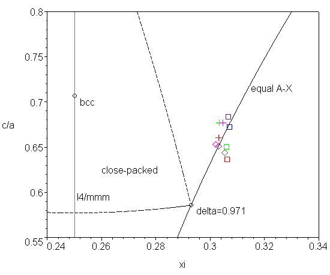

| Structural type | C4 |
| Common name | rutile |
| Definition | |
| Prototype | TiO2 |
| Pearson symbol | tP6 |
| Space group | 136 P4_2/mnm D4h14 |
| Chemical formula | AX2 |
| Bonding | ionic-covalent |
| Atomic positions | A (2a) 0 0 0 (marked by C) |
| Coordination | see the comment below |
| Sublattices | |
| PDB files | C4 (the most symmetric form), unit cell, X backbone |
| Parameters | c/a≥0.59, xi≥0.29 |
| Substances | dioxides and difluorides (see the table below) |
Component A is a metal or semiconductor, X is something like oxygen or fluoride. The crystal has ion-covalent bonding, where X cations tend to form close-packed structure and A tend to have optimal coordination. From these reasons the optimal value of parameters are c/a=2-sqrt(2) and xi=1-1/sqrt(2) (pdb). At this point the packing factor of X-backbone (pdb) has local maximum (δ=4(3sqrt(2)-4)=0.971, z=11) and the coordination polyhedron of A atom is an octahedron AX6. Now we must take into account that the placement of A atoms into octahedral voids of X-backbone expands those octahedra in the direction of minimal resistance. Looking at the next coordination sphere we see that 4 X atoms in AX6 octahedron have 3 X atoms in behind and 2 X atoms have only one. Therefore in this direction the octahedron AX6 will be expanded in a way preserving the A-X distances. Lighter elements have more rigid covalent bonds so the corresponding crystals are less deformed (e.g. for TiO2 δ=0.73). This all is illustrated in the diagram below.
Note that the nearest higher symmetry is I4/mmm when xi=1/4 (Wyckoff position 2b) but it is energetically unfavourable.
| A | X | a | c | xi | |
|---|---|---|---|---|---|
| Si | O | 4.1773 | 2.6600 | 0.3061 | stishovite |
| Ge | O | 4.400 | 2.862 | 0.306 | argutite |
| Sn | O | 4.7375 | 3.1865 | 0.307 | cassiterite |
| Pb | O | 4.9578 | 3.3878 | 0.3067 | plattnerite |
| Ti | O | 4.5937 | 2.9581 | 0.3053 | rutile |
| Mn | O | 4.398 | 2.873 | 0.302 | pyrolusite |
| Ta | O | 4.709 | 3.065 | 0.303 | |
| Mg | F | 4.623 | 3.052 | 0.303 | sellaite |
| Mn | F | 4.8736 | 3.3000 | 0.3046 | |
| Co | F | 4.6950 | 3.1785 | 0.3034 |